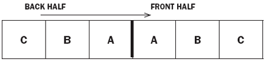

Section 15 COURSE SET-UP
Definitions
Within each section, all defined terms are in italics and are listed alphabetically in Section 2 - Definitions.
A golf course is rated on its effective playing length and its playing difficulty under normal conditions. Each hole may be evaluated in determining the course setup from a distance standpoint in order to provide a fair test and to require a player to use most or all clubs during a round. If the length or normal playing difficulty changes materially, a Handicap Index will be distorted. A difference of 22 yards for men or 18 yards for women will change the USGA course rating 0.1 of a stroke. The Handicap Committee should seek the cooperation of the Green Committee in maintaining both length and normal playing difficulty at a constant and fair level.
Placement of tee markers should be balanced so that the course's effective playing length is approximately the same from day to day. Adjustment may be made to allow for weather and turf conditions.
The "teeing ground" is defined In "The Rules of Golf" as a rectangular area two club-lengths in depth, the front and the sides of which are defined by the outside limits of two tee markers. In view of this definition, the tee markers must always be at least two club-lengths forward of the back edge of the teeing ground.
In the illustration below, the total area represents the usual teeing ground, and the heavy line in the center indicates the point of the permanent marker from which the hole was measured.

Balance tee placement as follows:
a. Normal conditions
Place tee markers on odd-numbered holes on front half in area A (or B or C); on even numbered holes, place tee markers on back half of same-lettered area. When changing tee markers, place odd-hole markers on back half and even-hole markers on front half. In other words, alternate between the halves and rotate among lettered areas, always using areas of the same letter at the same time, except under conditions outlined below.
b. Abnormal conditions
Use rear areas for a fast course and forward areas for a slow course. For example, when the course is hard and fast, place front-half markers in A and back-half markers in C. When the course is soft and slow, place front-half markers in C and back-half markers in A.
Under extreme conditions, all markers should be placed in the back half or the front half of all tees, depending upon what is necessary to try to achieve normal playing distance.
The above recommendation should be followed for each set of tee markers.
Many factors affect the selection of hole locations. The first and most important is good judgment in deciding what will give fair results. Do not be tricky in selecting hole locations.
Following are specific points:
(i) Study the design of the hole as the architect intended it to be played. Know the length of the shot to the putting green and how it may be affected by the probable conditions for the day - that is, wind and other weather elements, condition of the turf from which the shot will be played, and holding quality of the putting green.
(ii) There must be enough putting green surface between the hole and the front and the sides of the green to accommodate the required shot. For example, if the hole requires a long iron or wood shot to the green, the hole may be located deeper in the green and farther from its sides than may be the case if the hole requires a short pitch shot.
In any case, it is recommended that the hole be located at least four paces from any edge of the putting green. If a bunker is close to the edge, or if the ground slopes away from the edge, the distance should be greater, especially if the shot is more than a pitch.
Consideration should be given to fair opportunity for recovery after a reasonably good shot that just misses the putting green.
(iii) An area two to three feet in radius around the hole should be as nearly level as possible and of uniform grade. In no case should holes be located in tricky places or on sharp slopes where a ball can gather speed. A player above the hole should be able to stop the ball at the hole.
(iv) Consider the condition of nearby turf, especially taking care to avoid old hole plugs that have not completely healed.
(v) Holes should be cut as nearly on the vertical as possible, not plumb with the contour of the putting green.
(vi) There should be a balanced selection of hole locations for the entire course with respect to left, right, central, front, and back positions. For example, avoid too many left positions with the resulting premium on drawn or hooked shots.
(vii) For a competition played over several days, the course should be kept in balance daily as to degree of difficulty. In a stroke play competition, the first hole of the first round is as important as the last hole of the last round, so the course should not be set up appreciably more difficult for any round - balanced treatment is the aim. An old concept of making the course progressively harder round after round is fallacious.
Please consult the USGA publication "How to Conduct a Competition" for further reference.
The location of the tee markers should take into consideration both length and the various obstacles of the hole in order to provide a consistent and fair test that accurately reflects the USGA Course Rating and Slope Rating.
The various obstacles should be maintained in a manner that is similar to how they were rated, consistent with the principles of Section 15-1.
Please consult the USGA Publication "How to Conduct a Competition" for further reference.
It is extremely important for the committee in charge of the competition or in charge of the course to ensure that the course has been properly and completely marked. It is difficult to play under the Rules of Golf on an unmarked golf course, and the USGA Course Rating and Slope Rating is based on the course being properly marked. If all boundaries, water hazards, and ground under repair have been properly marked, the committee will have few problems during the golf season.